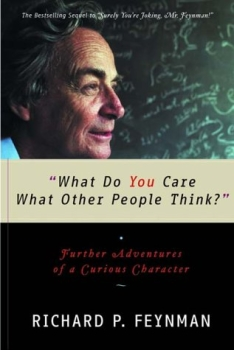
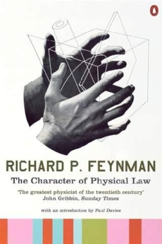

Другие работы Ричарда Ф.Фейнмана
|  |  | |
|
«What Do You Care What Other People Think?» («Какое ТЕБЕ дело до того, что думают другие?») |
«The Meaning of It All: Thoughts of a Citizen Scientist» |
«The Character of Physical Law: The 1964 Messenger Lectures» (Цикл лекций «Характер физических законов») |